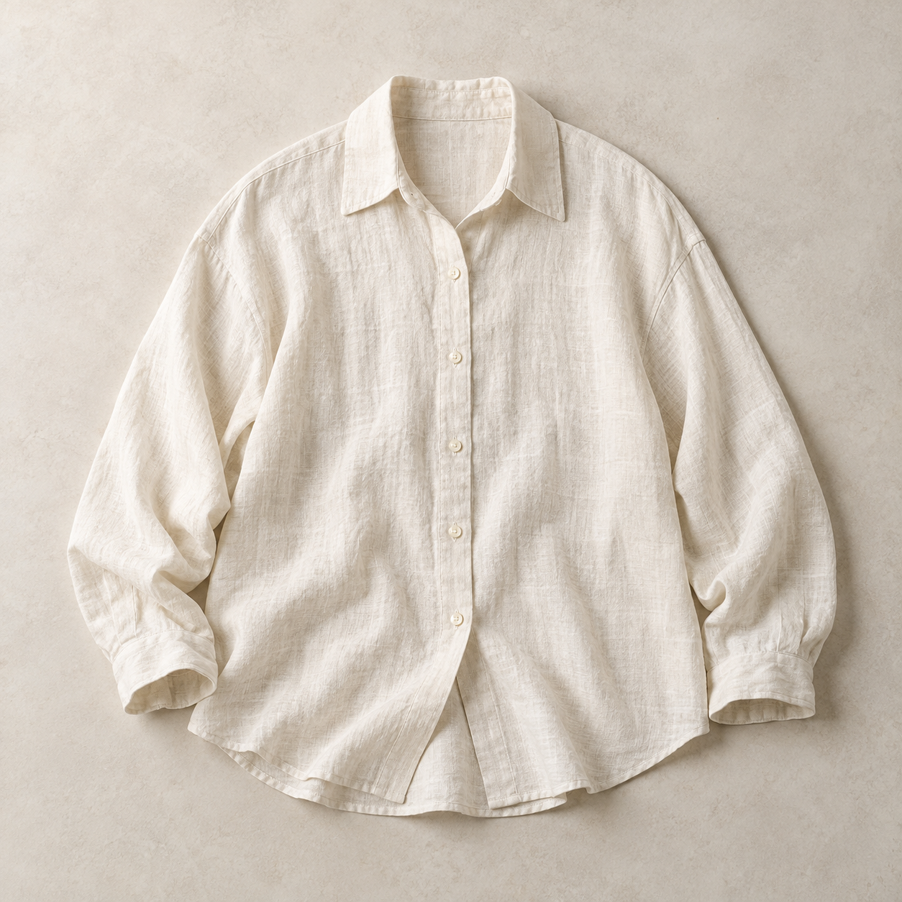
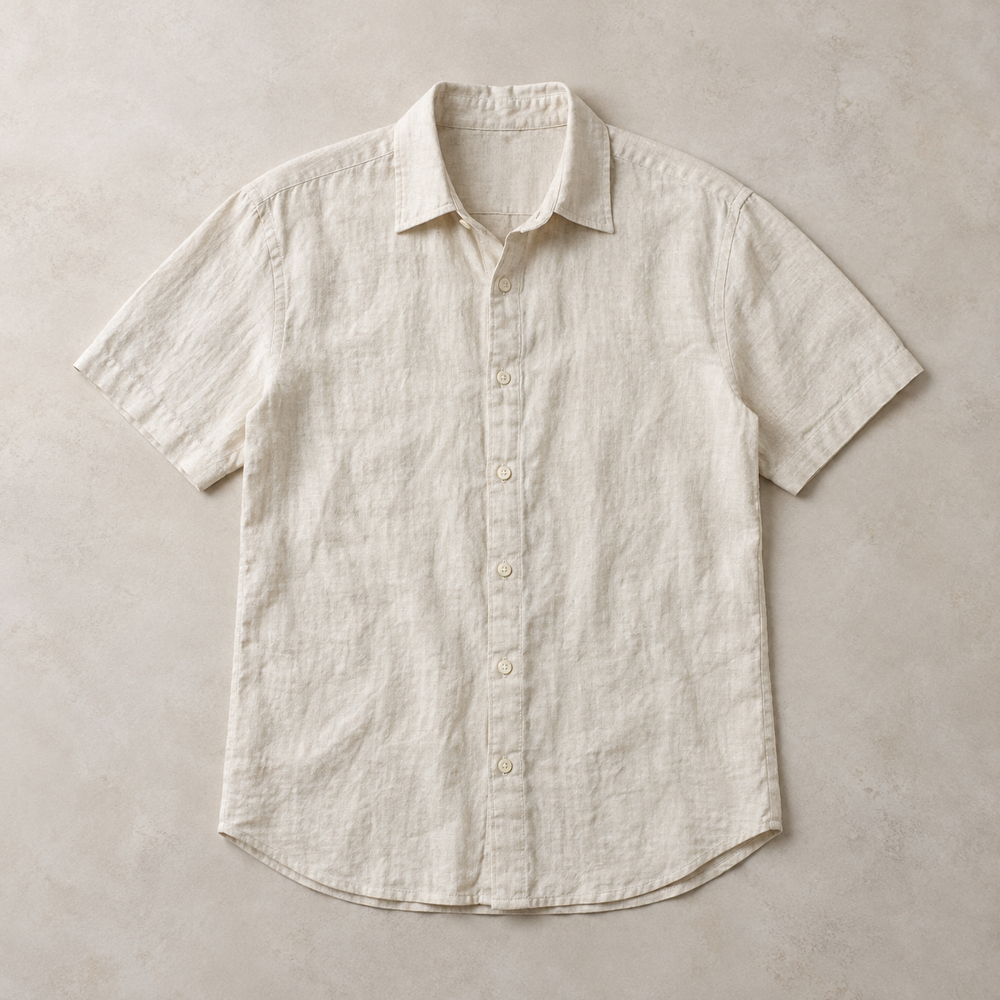
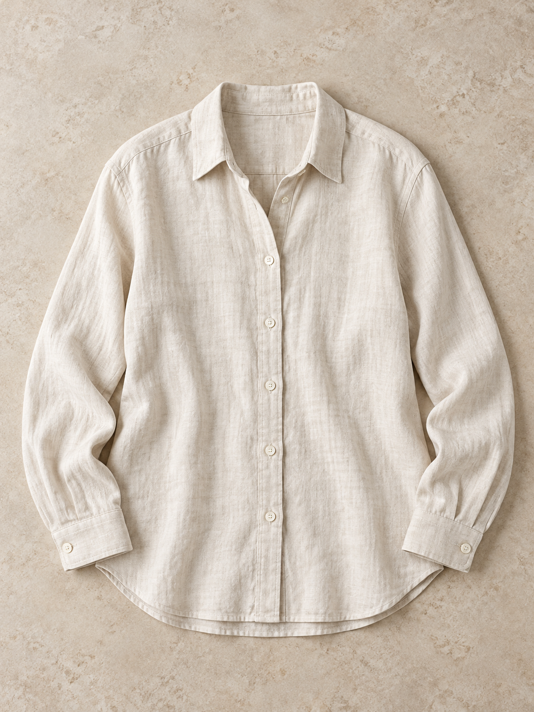
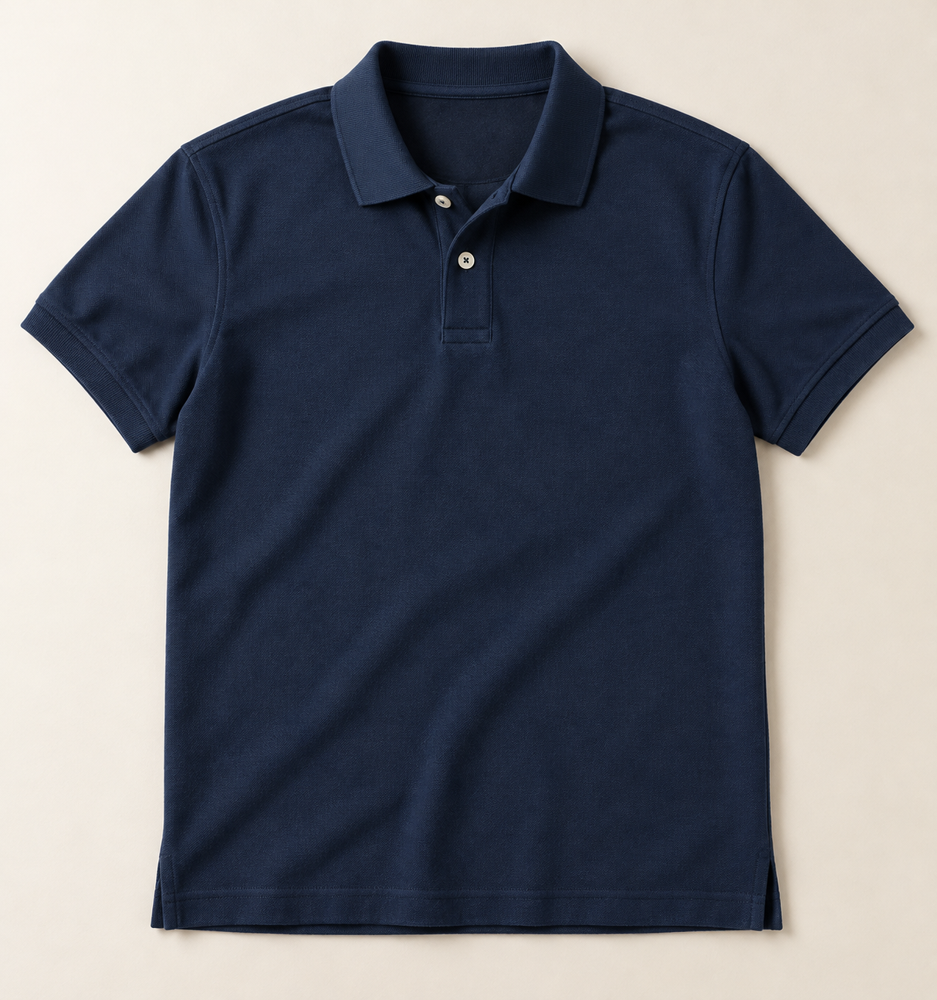
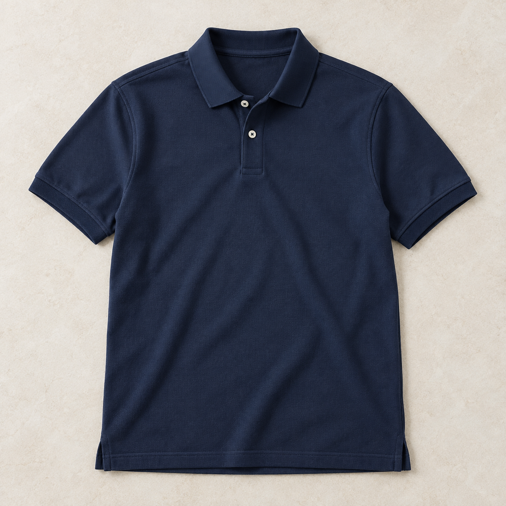
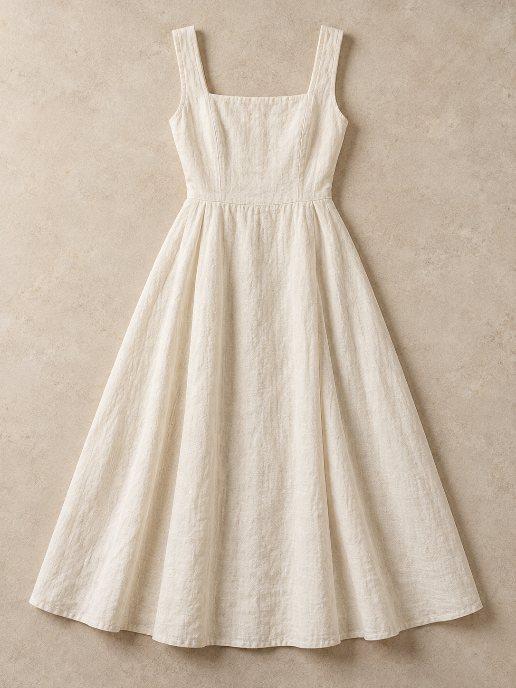
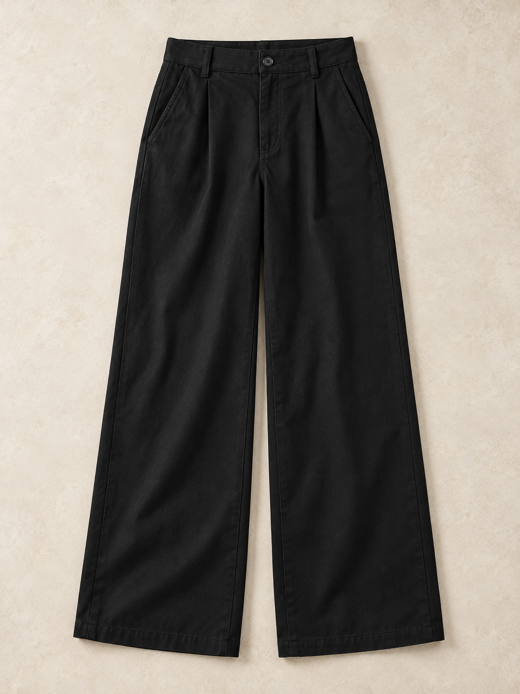

NÉT Studio · Media review · 27.10.2026
Ảnh sản phẩm flat-lay
So sánh ảnh AI demo đang dùng với các ứng viên flat-lay chụp thật theo phong cách catalog. Chỉ có quần áo, không người mặc, mannequin hay hình minh họa.
Lưu ý: Đây là ảnh được tạo bằng AI theo phong cách ảnh chụp, không phải ảnh chụp hàng thật đang bán. Ảnh không xác nhận mẫu mã, màu sắc, chất liệu hoặc hàng tồn thực tế. Chỉ dùng cho demo/UAT sau khi được duyệt; cần ảnh sản phẩm thật từ cửa hàng trước khi dùng catalog cho bán hàng thực tế.
Áo sơ mi linen dáng rộng · ao-so-mi-linen

api/public/demo-media/products/ao-so-mi-linen-v2-photo.webp

ao-so-mi-linen-flatlay-review-20261027.png

ao-so-mi-linen-flatlay-generated-20261027.png

api/public/demo-media/products/ao-so-mi-linen-v2-photo.webp · nguồn: ao-so-mi-linen-natural-flatlay-review-20261027-v2.png
Áo polo cotton pique · ao-polo-cotton-pique

api/public/demo-media/products/ao-polo-cotton-pique-photo.webp

ao-polo-cotton-pique-flatlay-review-20261027.png

ao-polo-cotton-pique-flatlay-navy-generated-20261027.png
Váy midi cổ vuông · vay-midi-co-vuong

api/public/demo-media/products/vay-midi-co-vuong-v2-photo.webp

api/public/demo-media/products/vay-midi-co-vuong-v2-photo.webp · nguồn: vay-midi-co-vuong-flatlay-review-20261027.png
Quần suông cotton premium · quan-suong-cotton

api/public/demo-media/products/quan-suong-cotton-v2-photo.webp

api/public/demo-media/products/quan-suong-cotton-v2-photo.webp · nguồn: quan-suong-cotton-premium-flatlay-review-20261027.png